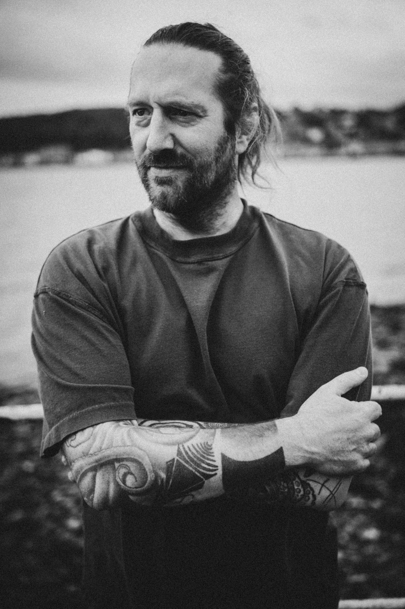
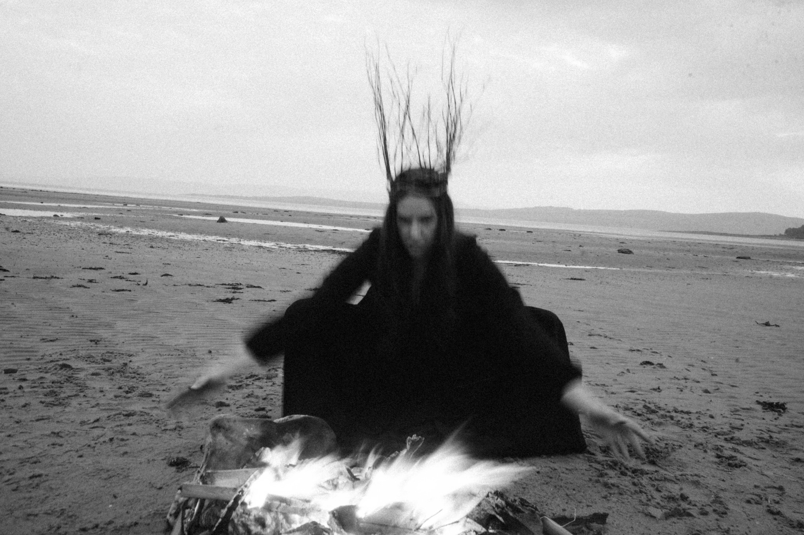
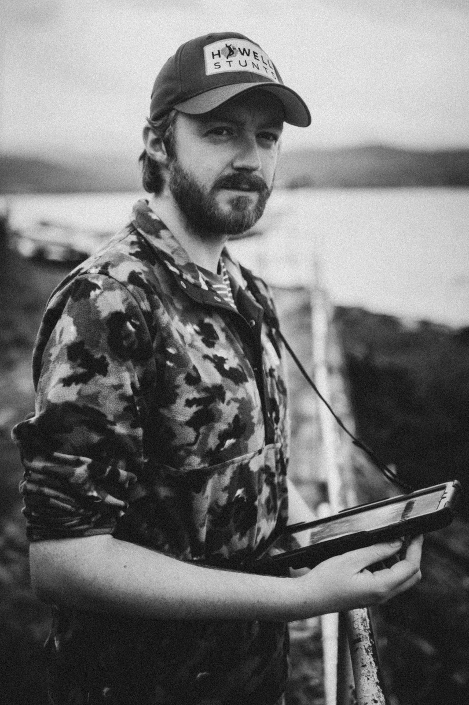

ABOUT
Massive Overheads is an independent film production company based on the Isle of Bute, Scotland.
The company develops and produces original narrative work for cinema and screen, carrying projects from first idea through development, production and completion.
We do not make speculative work for brands, publish showreels or maintain a general development slate. Projects are originated internally and assembled around the particular requirements of the work.
Massive Overheads operates at whatever scale a project requires and maintains direct creative and production control across its work.
We are interested in authorship, strong formal decisions and the practical business of getting films made properly.

